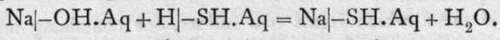
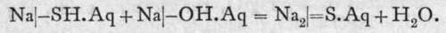

Sulphides And Hydrosulphides
Description
This section is from the book "Modern Chemistry", by William Ramsay. Also available from Amazon: Modern Chemistry: Theoretical and Modern Chemistry (Volume 2).
Sulphides And Hydrosulphides
The analogy between the elements oxygen and sulphur is well shown by comparing the sulphides of the elements of which the oxides have been described. Elements of the lithium group form both hydrosulphides and sulphides ; thus we know sodium hydrosulphide, NaSH, analogous to the hydroxide NaOH, and sulphide, similar in formula to the oxide Na2O, Na2S. Hydrogen sulphide is a weak acid; hence, on passing hydrogen sulphide through a concentrated solution of sodium hydroxide at 950 until saturation is complete, white crystals of NaSH.2H2O deposit on evaporation. The equation is :

On mixing the solution with an equivalent quantity of sodium hydroxide and evaporating, the sulphide is produced :

Here it must be supposed that the hydrogen of the hydro-sulphide is present as an anion, and that it reacts with the hydroxyl of the caustic soda, forming water, while the sodium sulphide remains in solution in an ionised form, and can be recovered on evaporation in crystals with c;H2O. Similar compounds exist with potassium.
Calcium, strontium, and barium also form hydro-sulphides and sulphides, analogous in formula to the hydroxides and oxides. They are similarly prepared to the sodium compounds, but, as the metals are dyads, their formulae are M(SH)2 and MS; and there is an intermediate compound between the hydroxide and hydro-sulphide, having, in the case of calcium, the formula HSCaOH. They are also soluble in water. Magnesium, too, forms a hydrosulphide, probably Mg(SH)2; it is prepared by passing sulphuretted hydrogen into water in which magnesium oxide is suspended. It is unlike the hydrosulphides of the alkalies, for while they do not decompose with water, it, on the contrary, when its solution is heated to 8o°, reacts with water, yielding hydroxide and sulphuretted hydrogen: Mg(SH)2.Aq + 2HOH = Mg(OH)2 + 2H2S. The probable explanation of this change is that water is not wholly non-ionised, but that there are present some hydrogen ions; these are not so inconsiderable in number, compared with those of the weak acid H2S; on raising temperature, a certain amount of hydrogen sulphide is liberated, and, being volatile, it escapes, and is no longer present to act on the magnesium hydroxide and reconvert it into sulphide.
Sulphides of boron, aluminium, chromium, and silicon are at once decomposed by water, and cannot, therefore, be produced in aqueous solution. They are white substances formed by heating the elements to a high temperature in a current of sulphur vapour.
The sulphides of copper, silver, gold, cadmium, mercury, indium, thallium, tin, lead, arsenic, antimony, and bismuth, and of the metals of the palladium and platinum groups, are all insoluble in water, or, to be more accurate, very sparingly soluble. They form no hydrosulphides. Hence they are precipitated from soluble salts of these metals by addition of sulphuretted hydrogen ; they form flocculent precipitates, usually characterised by striking colours, and are therefore generally used as a means of recognising the metal. CuS, Ag.,S, Au9S3, HgS, TlgS, T12S3, PbS, PtS2, and the other sulphides of the platinum group of metals are black ; CdS, SnS9, and As9S3 are yellow; In2S3, SnS, and Bi2S3 are brown, and Sb2S3 is orange. These sulphides are not attacked by dilute acids. On the other hand, the sulphides of zinc, manganese, iron, cobalt, and nickel are not precipitated by hydrogen sulphide, but they are thrown down by a soluble sulphide or hydrosulphide, such as those of ammonium or sodium. They, too, form flocculent precipitates; ZnS is white, MnS pink, and FeS, CoS, and NiS are black. The reason of the difference in the behaviour of the two classes of sulphides is an interesting one, and will be now explained.
Continue to: